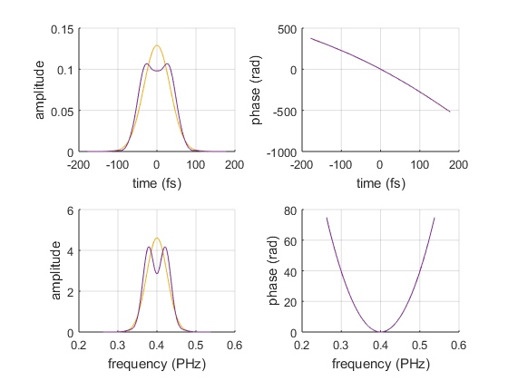
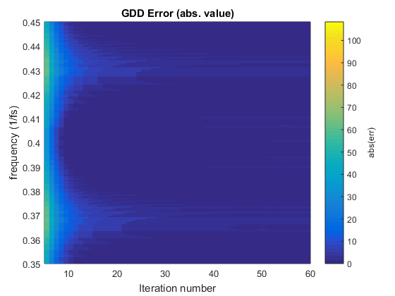
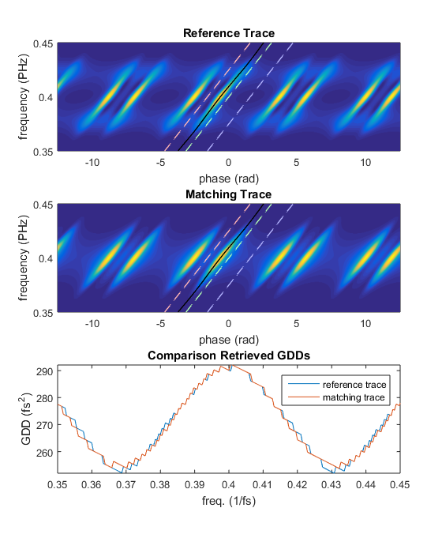
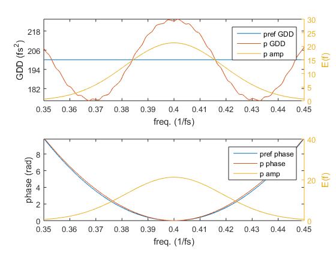

Script for searching pair of pulses which are not distinguishable by MIIPS.
First we define a simple laser pulse, for ex. a linearly chirped Gaussian pulse. Then we obtain a second pulse by distorting the spectrum of the first one. The idea is to compare the MIIPS traces corrensponding to the two pulses. The traces look different because MIIPS is affected by the amplitude modulation. We then modify the phase of the first (gaussian) pulse until its MIIPS trace become equivalent to the MIIPS trace of the second distorted pulse. If we manage to do so we have found a pair of pulses with different amplitude and phase, which are not distinguishable by MIIPS.
2015 Alberto Comin - LMU Munich
Contents
- Define first pulse (simple Gaussian withe linear chirp)
- Define a second pulse (the spectrally distorted one)
- Define MIIPS parameters
- Define reference MIIPS trace using the amplitude modulated pulse
- Initialize parameters for ambiguities search
- Seek equivalent trace by modifying the spectral phase of the first pulse
- Plotting figures
Define first pulse (simple Gaussian withe linear chirp)
f0 = 0.4; % central frequency (1/fs) fwhm = 10; % FWHM of temporal intensity (fs) dt = 2; % time step (fs) N = 2^10; % number of domain points % time domain array t = (-N/2:N/2-1).' * dt; Et = exp(-2*log(2)*t.^2/fwhm^2); % laser pulse (requires LaserPulse class) p = LaserPulse(t,'fs',Et); p.frequencyOffset = f0; % set the central frequency p.normalize() % add some chirp p.polynomialPhase([200 0 0]) % GDD = 100 fs^2
Define a second pulse (the spectrally distorted one)
% create copy of first pulse pref = p.copy(); % modulate amplitude (here are three example) pulsetype = 2; switch pulsetype % can add new cases or modify these ones case 1 pref.spectralAmplitude = pref.spectralAmplitude .* ... max(0, 1 - 0.8/pi*(pi/2+atan((p.frequencyArray-p.centralFrequency)*fwhm*10))); case 2 pref.spectralAmplitude = pref.spectralAmplitude .* ... max(0, 1 - 0.4*cos((p.frequencyArray-p.centralFrequency)*fwhm*10)); case 3 pref.spectralAmplitude = pref.spectralAmplitude .* ... max(0, 1-0.8*exp(-(pref.frequencyArray-pref.centralFrequency).^2/pref.bandwidth.^2)); case 4 pref.spectralAmplitude = pref.spectralAmplitude .* ... max(0, 1-0.8*exp(-(pref.frequencyArray-1.1*pref.centralFrequency).^2/pref.bandwidth.^2*4)); end pref.normalize()
We plot the two pulses. We will modify the spectral phase of the Gaussian one until its MIIPS traces will be equivalent to the MIIPS trace of the distorted pulse.
figure(1) set(gcf,'Name', 'Initial Pulses'); p.plot(gcf); pref.plot(gcf)
Define MIIPS parameters
maxGDD = 500; % must be bigger that the pulse chirp (fs^2) modFreq = 10; % frequency of MIIPS modulation (fs) modAmp = maxGDD/modFreq^2; % amplitude of MIIPS modulation (rad) phi = linspace(-4*pi, 4*pi, 4000); % scanning phase (rad) fitrange = Inf; % use the whose frequency range for MIIPS evaluation method = 'peak-finding'; % 'peak-finding', 'centerOfMass' or 'weighted'
Define reference MIIPS trace using the amplitude modulated pulse
% this is the MIIPS trace which we will try to match mref = Miips(pref, modAmp, modFreq, phi,... 'fitrange',fitrange,'analysisMethod',method);
Initialize parameters for ambiguities search
nIter = 60; % number of iterations of the algorithm maxCorr = maxGDD/2; % maximum correction for the GDD error corrFact = 0.2; % fraction of the correction to apply (smaller values give more stability) smoothingCorr = true; % wether to smooth the correction before applying it smoothFact = .1; % this is the miips trace which will be modified until it matches 'mref' msim = Miips(p, modAmp, modFreq, phi,... 'fitrange', fitrange, 'analysisMethod', method); % initialize GDD retrieved from msim retrGDD = zeros(numel(t), nIter); retrGDD(:, 1) = msim.retrievedGDD; % initialize error array (difference betweeen GDDs retrieved from msim and mref) err = zeros(numel(t), nIter); err(:, 1) = msim.retrievedGDD - mref.retrievedGDD;
Seek equivalent trace by modifying the spectral phase of the first pulse
wb = waitbar(0, 'matching reference trace...', ... 'Name', 'MIIPS Ambiguities Search', ... 'CreateCancelBtn', 'setappdata(gcbf,''canceling'',1)'); setappdata(wb, 'canceling', 0); for n = 2:nIter % calculate correction corr = corrFact * err(:, n-1); if smoothingCorr corr = smooth(corr,smoothFact,'lowess'); end corr = min(maxCorr, max(-maxCorr, corr)); % calcuate next guess for the GDD retrGDD(:,n) = retrGDD(:,n-1) - corr; % calculate the phase from the GDD msim.inputPulse.spectralPhase = doubleIntegrateGDD(... 2*pi*mref.frequencyArray, 2*pi*mref.centralFrequency, retrGDD(:,n-1)); % update miips trace and calculate the new error msim.update(); err(:, n) = msim.retrievedGDD - mref.retrievedGDD; waitbar(n/nIter, wb, sprintf('matching reference trace (%.f %%)', n/nIter*100)) if getappdata(wb, 'canceling'); break; end end delete(wb)
Plotting figures
% Set the frequency range to be plotted:
freqPlotRange = [-0.05, 0.05]+f0;
freqIndexRange = p.frequencyArray>=freqPlotRange(1) & p.frequencyArray<=freqPlotRange(2);
First we plot the error of the GDD: it should converge to zero.
figure(2) set(gcf,'Name','GDD error') pcolor(5:size(err,2),pref.frequencyArray,(err(:,5:end))); shading flat caxis([0 max(max(err(freqIndexRange,:)))]) c = colorbar; ylabel(c, 'abs(err)') ylim(freqPlotRange) xlabel('Iteration number') ylabel('frequency (1/fs)') title('GDD Error (abs. value)')
We compare the MIIPS traces and the GDD retrieved from them. If the retrieved GDDs are overlapped, than we found two pulses which are not distinguishable by MIIPS.
figure(3) subplot(3,1,1) pcolor(mref) ylim(freqPlotRange) title('Reference Trace') subplot(3,1,2) pcolor(msim) ylim(freqPlotRange) title('Matching Trace') subplot(3,1,3) plot(mref.frequencyArray,[mref.retrievedGDD, msim.retrievedGDD]); legend('reference trace', 'matching trace') xlim(freqPlotRange) ylim([min(mref.retrievedGDD(freqIndexRange)), max(mref.retrievedGDD(freqIndexRange))]) xlabel('freq. (1/fs)') ylabel('GDD (fs^2)') title('Comparison Retrieved GDDs')
Now we plot the two 'indistinguishable' pulses.
figure(4) set(gcf,'Name','Comparison pulses') subplot(2,1,1) h1 = plotyy(... pref.frequencyArray,[pref.groupDelayDispersion, msim.inputPulse.groupDelayDispersion],... p.frequencyArray,p.spectralIntensity); legend(h1(1), 'pref GDD','p GDD','p amp') xlim(h1(1),freqPlotRange) xlim(h1(2),freqPlotRange) ylim([ ... min([pref.groupDelayDispersion(freqIndexRange); msim.inputPulse.groupDelayDispersion(freqIndexRange)]), ... max([pref.groupDelayDispersion(freqIndexRange); msim.inputPulse.groupDelayDispersion(freqIndexRange)]) ]) h1(1).YTick = linspace(round(h1(1).YLim(1),-1), round(h1(1).YLim(2),-1),6)'; xlabel(h1(1), 'freq. (1/fs)') ylabel(h1(1),'GDD (fs^2)') ylabel(h1(2),'E(f)') subplot(2,1,2) h2 = plotyy(... pref.frequencyArray,[pref.spectralPhase, msim.inputPulse.spectralPhase],... p.frequencyArray,p.spectralIntensity); legend(h2(1), 'pref phase','p phase','p amp') xlim(h2(1),freqPlotRange) xlim(h2(2),freqPlotRange) ylim([min(pref.spectralPhase(freqIndexRange)), max(pref.spectralPhase(freqIndexRange))]) h2(1).YTick = linspace(round(h2(1).YLim(1),-1), round(h2(1).YLim(2),-1),6)'; xlabel(h2(1), 'freq. (1/fs)') ylabel(h2(1),'phase (rad)') ylabel(h2(2),'E(f)')